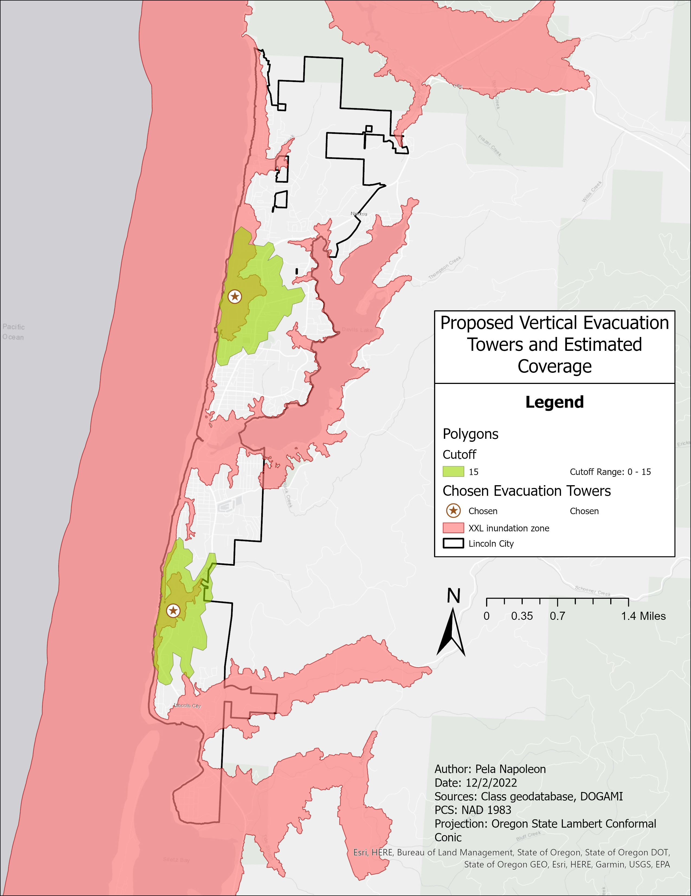

In the fall of 2022, I took a class called "Land Use Planning for Resilient Communities." The course was centered on teaching land use practices that mitigate the impact of natural hazards. In labs, I would put the teachings to practical use by using ArcGIS Pro analyze hazards and plan specfic mitigation actions.
The final project was then a culmination of everything. I had to choose a place that is vulnerable to a natural hazard and plan mitigation efforts. I decided to choose Lincoln City, OR as my location of interest as it is under the dual threat of earthquake and tsunami thanks to the Cascadia Subduction Zone. My efforts were focused on mitigating the tsunami hazard as it would be simpler to focus on one hazard instead of two for the final project. I had to come up with two policy objectives that would mitigate the vulnerability of the community to a tsunami.
My first policy plan was to construct tsunami evacuation towers to provide easy access to high ground for those without it. The second policy plan was to find the best location for a new facility that would provide aid after a tsunami. I analyzed these two policies within ArcGIS Pro to get a result.
The two result maps are shown below. One shows the two best locations for tsunami evacuation towers within the city. The other depicts the best location for a new critical facility to be constructed to provide aid in the aftermath of a tsunami.
View the full paper